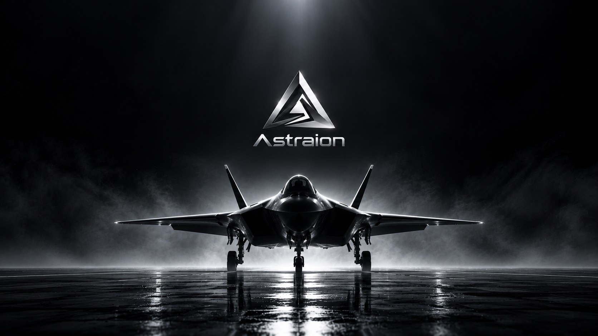
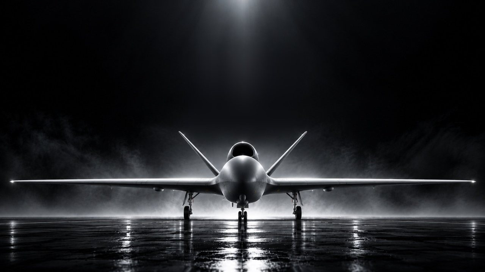

Defence simulation · Europe
Simulation for the moments
that decide a mission.
Four working prototypes for drone autonomy, crew training and pilot readiness, built so the hardest situations can be practised safely and measured.
The problem
The situations that decide a mission are the ones nobody can practise.
The drone is suddenly on its own.
No position, in hostile airspace.
Seconds to react, no second try.
Rare in training, decisive in reality.
Too dangerous to create on purpose in real flight.
Too rare to wait for.
Too costly to repeat often enough to learn from.
Astraion builds realistic simulation where these moments can be created on demand, repeated exactly and measured, for crews and for AI.
Overview
The case in thirty seconds
The prototypes
Four prototypes.
One purpose.
Two for drones, two for fighter jets. Each one tackles a situation that cannot be practised safely or often enough in real flight.
Working together
Bring us one scenario from your programme.
The best way to judge these prototypes is against a problem you already have.
- 1
Demonstration
All four prototypes, on site or remote, followed by a discussion with your team.
- 2
Scenario pilot
We rebuild one aircraft, mission or threat from your programme and run it with your people.
- 3
Joint evaluation
A defined study with agreed measures, and results you can take into your own programme.
Built for
- Aerospace and defence manufacturers
- Air forces and flight training units
- Drone and autonomy programmes
- Defence innovation agencies

Practise the mission
before it happens.
Private demonstrations for defence partners and investors.
Request a briefing